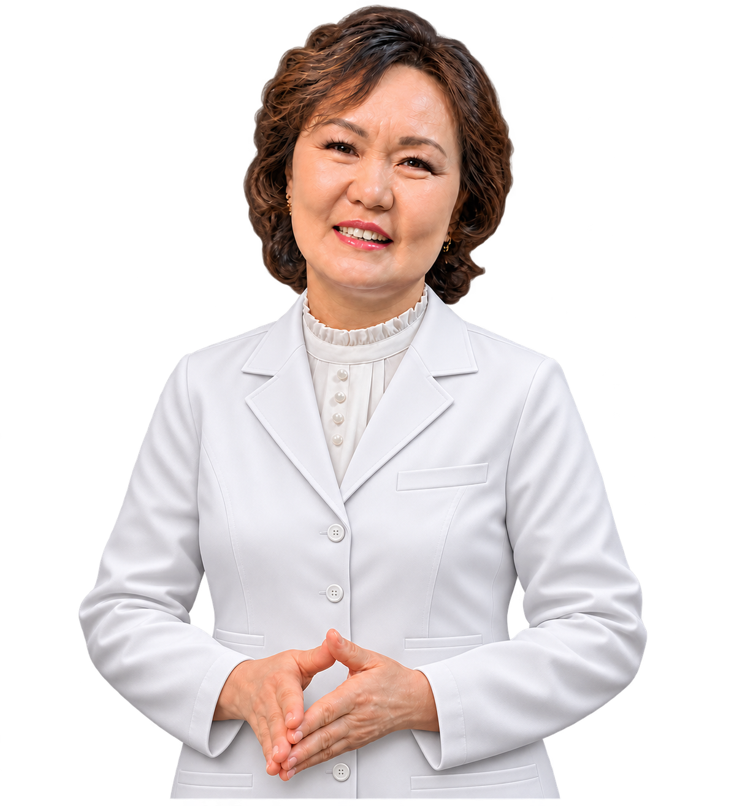

6 әдіс қалай жасалады?
Лаура әр әдісті өз тәжірибесінен мысал келтіріп түсіндіреді.
Айына 1 млн ₸ және одан жоғары табыс табуға көмектесетін 6 әдіс пен 1 стратегияны үйреніңіз.

Массаж мамандары мен медицина қызметкерлеріне арналған кездесу. Лаура Жеңісқызы өз тәжірибесіндегі алты әдісті таныстырып, табысты арттыру стратегиясымен бөліседі.
Лаура әр әдісті өз тәжірибесінен мысал келтіріп түсіндіреді.
Алты әдістің ішінен өз жұмысыңызға керегін таңдайсыз.
«Сеанс неге осынша тұрады?» деген сұраққа қалай жауап беруге болатынын бірге талқылаймыз.
Өз бағаңызбен есептеп көресіз: осы табысқа жету үшін аптасына қанша сеанс өткізу керек?
Екі AMIR MED орталығының негізін қалаушы. Массаж бен сауықтыру саласында 38 жыл жұмыс істеп келеді.

 AMIR MEDМедициналық орталық · Алматы2GIS-тен көру ↗
AMIR MEDМедициналық орталық · Алматы2GIS-тен көру ↗Билет алу үшін ұйымдастырушыға WhatsApp арқылы жазыңыз.
Алматыда, Лаура Жеңісқызымен бірге
Кез келген қаладан онлайн қатысу